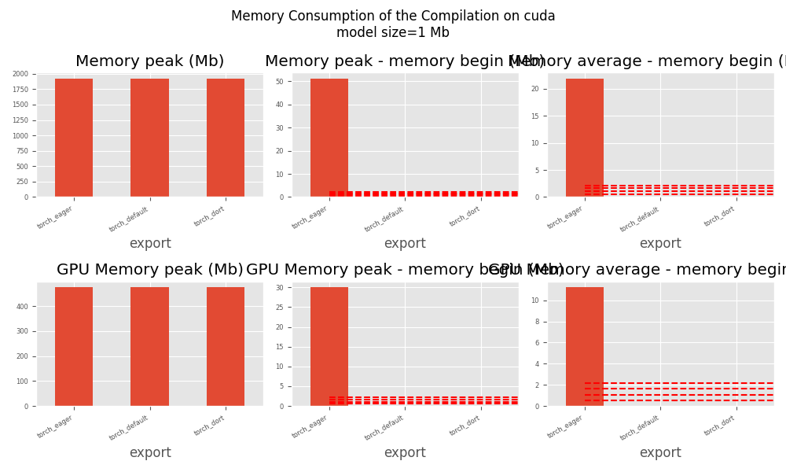
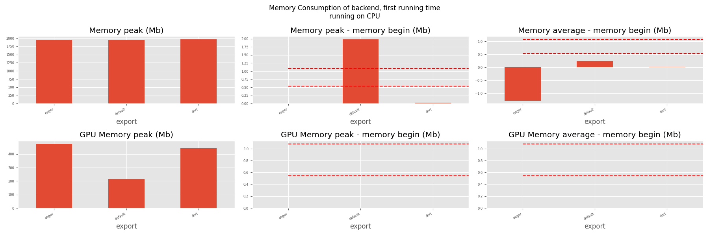
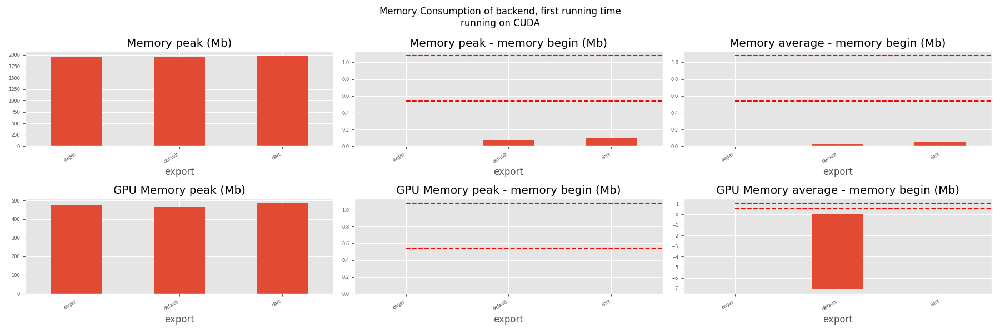
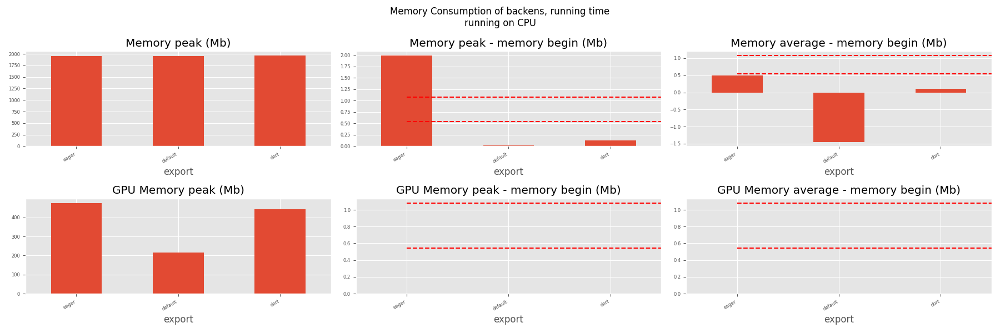
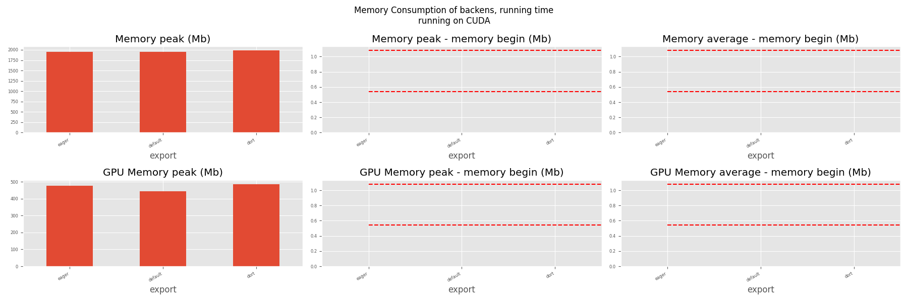

Note
Go to the end to download the full example code.
201: Evaluate DORT Training¶
It compares DORT to eager mode and onnxrt backend.
To run the script:
python _doc/examples/plot_torch_aot --help
Some helpers¶
import warnings
try:
with warnings.catch_warnings():
warnings.simplefilter("ignore")
import onnxruntime
has_cuda = "CUDAExecutionProvider" in onnxruntime.get_available_providers()
except ImportError:
print("onnxruntime not available.")
import sys
sys.exit(0)
import torch._dynamo
import contextlib
import itertools
import os
import gc
import platform
# import pickle
import pprint
import multiprocessing
import time
import cProfile
import pstats
import io
import logging
from pstats import SortKey
import numpy as np
import matplotlib.pyplot as plt
import pandas
import onnx
from onnx_array_api.profiling import profile2graph
import torch
from torch import nn
import torch.nn.functional as F
import experimental_experiment
from experimental_experiment.plotting.memory import memory_peak_plot
from experimental_experiment.ext_test_case import measure_time, get_figure
from experimental_experiment.args import get_parsed_args
from experimental_experiment.memory_peak import start_spying_on
from experimental_experiment.torch_models.training_helper import make_aot_ort
from tqdm import tqdm
has_cuda = has_cuda and torch.cuda.is_available()
logging.disable(logging.ERROR)
def system_info():
obs = {}
obs["processor"] = platform.processor()
obs["cores"] = multiprocessing.cpu_count()
try:
obs["cuda"] = 1 if torch.cuda.is_available() else 0
obs["cuda_count"] = torch.cuda.device_count()
obs["cuda_name"] = torch.cuda.get_device_name()
obs["cuda_capa"] = torch.cuda.get_device_capability()
except (RuntimeError, AssertionError):
# no cuda
pass
return obs
pprint.pprint(system_info())
{'cores': 20,
'cuda': 1,
'cuda_capa': (8, 9),
'cuda_count': 1,
'cuda_name': 'NVIDIA GeForce RTX 4060 Laptop GPU',
'processor': 'x86_64'}
Scripts arguments
script_args = get_parsed_args(
"plot_torch_aot",
description=__doc__,
scenarios={
"small": "small model to test",
"middle": "55Mb model",
"large": "1Gb model",
},
warmup=5,
repeat=5,
repeat1=(1, "repeat for the first iteration"),
maxtime=(
2,
"maximum time to run a model to measure the computation time, "
"it is 0.1 when scenario is small",
),
expose="scenarios,repeat,repeat1,warmup",
)
if script_args.scenario in (None, "small"):
script_args.maxtime = 0.1
print(f"scenario={script_args.scenario or 'small'}")
print(f"warmup={script_args.warmup}")
print(f"repeat={script_args.repeat}")
print(f"repeat1={script_args.repeat1}")
print(f"maxtime={script_args.maxtime}")
scenario=small
warmup=5
repeat=5
repeat1=1
maxtime=0.1
The model¶
A simple model to convert.
class MyModelClass(nn.Module):
def __init__(self, scenario=script_args.scenario):
super().__init__()
if scenario == "middle":
self.large = False
self.conv1 = nn.Conv2d(1, 32, 5)
# self.conv2 = nn.Conv2d(128, 16, 5)
self.fc1 = nn.Linear(30752, 1024)
self.fcs = []
self.fc2 = nn.Linear(1024, 128)
self.fc3 = nn.Linear(128, 10)
elif scenario in (None, "small"):
self.large = False
self.conv1 = nn.Conv2d(1, 16, 5)
# self.conv2 = nn.Conv2d(16, 16, 5)
self.fc1 = nn.Linear(144, 512)
self.fcs = []
self.fc2 = nn.Linear(512, 128)
self.fc3 = nn.Linear(128, 10)
elif scenario in (None, "large"):
self.large = True
self.conv1 = nn.Conv2d(1, 32, 5)
# self.conv2 = nn.Conv2d(128, 16, 5)
self.fc1 = nn.Linear(30752, 4096)
# torch script does not support loops.
self.fca = nn.Linear(4096, 4096)
self.fcb = nn.Linear(4096, 4096)
self.fcc = nn.Linear(4096, 4096)
self.fcd = nn.Linear(4096, 4096)
self.fce = nn.Linear(4096, 4096)
self.fcf = nn.Linear(4096, 4096)
self.fcg = nn.Linear(4096, 4096)
self.fch = nn.Linear(4096, 4096)
self.fci = nn.Linear(4096, 4096)
# end of the unfolded loop.
self.fc2 = nn.Linear(4096, 128)
self.fc3 = nn.Linear(128, 10)
else:
raise ValueError(f"Unsupported scenario={scenario!r}.")
def forward(self, x):
x = F.max_pool2d(F.relu(self.conv1(x)), (4, 4))
# x = F.max_pool2d(F.relu(self.conv2(x)), 2)
x = torch.flatten(x, 1)
x = F.relu(self.fc1(x))
if self.large:
# loop
x = F.relu(self.fca(x))
x = F.relu(self.fcb(x))
x = F.relu(self.fcc(x))
x = F.relu(self.fcd(x))
x = F.relu(self.fce(x))
x = F.relu(self.fcf(x))
x = F.relu(self.fcg(x))
x = F.relu(self.fch(x))
x = F.relu(self.fci(x))
# end of the loop
x = F.relu(self.fc2(x))
y = self.fc3(x)
return y
def create_model_and_input(scenario=script_args.scenario):
if scenario == "middle":
shape = [1, 1, 128, 128]
elif scenario in (None, "small"):
shape = [1, 1, 16, 16]
elif scenario == "large":
shape = [1, 1, 128, 128]
else:
raise ValueError(f"Unsupported scenario={scenario!r}.")
input_tensor = torch.rand(*shape).to(torch.float32)
y = torch.rand((1, 10)).to(torch.float32)
model = MyModelClass(scenario=scenario)
assert model(input_tensor) is not None
return model, (input_tensor, y)
def torch_model_size(model):
size_model = 0
for param in model.parameters():
size = param.numel() * torch.finfo(param.data.dtype).bits / 8
size_model += size
return size_model
model, input_tensors = create_model_and_input()
model_size = torch_model_size(model)
print(f"model size={model_size / 2 ** 20} Mb")
model size=0.5401992797851562 Mb
Backends¶
def run(model, tensor_x, tensor_y):
tensor_x = tensor_x.detach()
tensor_y = tensor_y.detach()
for param in model.parameters():
param.grad = None
try:
output = model(tensor_x)
except Exception as e:
raise AssertionError(f"issue with {type(tensor_x)}") from e
loss = F.mse_loss(output, tensor_y)
# return loss
def _backward_():
loss.backward()
_backward_()
return loss, (param.grad for param in model.parameters())
def get_torch_eager(model, *args):
def my_compiler(gm, example_inputs):
return gm.forward
with contextlib.redirect_stdout(io.StringIO()):
with warnings.catch_warnings():
warnings.simplefilter("ignore")
optimized_mod = torch.compile(model, fullgraph=True, backend=my_compiler)
assert run(optimized_mod, *args)
return optimized_mod
def get_torch_default(model, *args):
with contextlib.redirect_stdout(io.StringIO()):
with warnings.catch_warnings():
warnings.simplefilter("ignore")
optimized_mod = torch.compile(model, fullgraph=True, mode="reduce-overhead")
assert run(optimized_mod, *args)
return optimized_mod
def get_torch_dort(model, *args):
with contextlib.redirect_stdout(io.StringIO()):
with warnings.catch_warnings():
warnings.simplefilter("ignore")
local_aot_ort, _ = make_aot_ort(dynamic=True, rewrite=True)
optimized_mod = torch.compile(model, backend=local_aot_ort, fullgraph=True)
run(optimized_mod, *args)
assert run(optimized_mod, *args)
return optimized_mod
Let’s check they are working.
export_functions = [
get_torch_eager,
get_torch_default,
get_torch_dort,
]
exporters = {f.__name__.replace("get_", ""): f for f in export_functions}
supported_exporters = {}
for k, v in exporters.items():
print(f"run function {k}")
filename = f"plot_torch_aot_{k}.onnx"
torch._dynamo.reset()
model, input_tensors = create_model_and_input()
try:
run(model, *input_tensors)
except Exception as e:
print(f"skipped due to {str(e)[:1000]}") # noqa: F821
continue
supported_exporters[k] = v
del model
gc.collect()
time.sleep(1)
run function torch_eager
run function torch_default
run function torch_dort
Compile and Memory¶
def flatten(ps):
obs = ps["cpu"].to_dict(unit=2**20)
if "gpus" in ps:
for i, g in enumerate(ps["gpus"]):
for k, v in g.to_dict(unit=2**20).items():
obs[f"gpu{i}_{k}"] = v
return obs
data = []
for k in supported_exporters:
print(f"run compile for memory {k} on cpu")
filename = f"plot_torch_aot_{k}.onnx"
if has_cuda:
torch.cuda.set_device(0)
torch._dynamo.reset()
# CPU
model, input_tensors = create_model_and_input()
stat = start_spying_on(cuda=1 if has_cuda else 0)
run(model, *input_tensors)
obs = flatten(stat.stop())
print("done.")
obs.update(dict(export=k, p="cpu"))
data.append(obs)
del model
gc.collect()
time.sleep(1)
if not has_cuda:
continue
torch._dynamo.reset()
# CUDA
model, input_tensors = create_model_and_input()
model = model.cuda()
input_tensors = [i.cuda() for i in input_tensors]
print(f"run compile for memory {k} on cuda")
stat = start_spying_on(cuda=1 if has_cuda else 0)
run(model, *input_tensors)
obs = flatten(stat.stop())
print("done.")
obs.update(dict(export=k, p="cuda"))
data.append(obs)
del model
gc.collect()
time.sleep(1)
run compile for memory torch_eager on cpu
done.
run compile for memory torch_eager on cuda
done.
run compile for memory torch_default on cpu
done.
run compile for memory torch_default on cuda
done.
run compile for memory torch_dort on cpu
done.
run compile for memory torch_dort on cuda
done.
The result.
df1 = pandas.DataFrame(data)
df1.to_csv("plot_torch_aot_1_memory.csv", index=False)
df1.to_excel("plot_torch_aot_1_memory.xlsx", index=False)
print(df1)
for p in ["cpu", "cuda"]:
if not has_cuda and p == "cuda":
continue
ax = memory_peak_plot(
df1[df1["p"] == p],
key=("export",),
bars=[model_size * i / 2**20 for i in range(1, 5)],
suptitle=f"Memory Consumption of the Compilation on {p}\n"
f"model size={model_size / 2**20:1.0f} Mb",
)
get_figure(ax).savefig(f"plot_torch_aot_1_memory_{p}.png")
- 
peak mean n begin end gpu0_peak gpu0_mean gpu0_n gpu0_begin gpu0_end export p
0 6540.824219 6540.794922 4 6540.765625 6540.824219 2065.617188 2065.617188 4 2065.617188 2065.617188 torch_eager cpu
1 6543.812500 6542.365625 5 6540.824219 6543.812500 2093.617188 2088.017188 5 2065.617188 2093.617188 torch_eager cuda
2 6543.812500 6543.809896 3 6543.812500 6543.812500 2093.617188 2093.617188 3 2093.617188 2093.617188 torch_default cpu
3 6543.878906 6543.856771 3 6543.812500 6543.878906 2093.617188 2093.617188 3 2093.617188 2093.617188 torch_default cuda
4 6545.859375 6545.201823 3 6545.859375 6545.859375 2093.617188 2093.617188 3 2093.617188 2093.617188 torch_dort cpu
5 6543.878906 6543.878906 2 6543.878906 6543.878906 2093.617188 2093.617188 2 2093.617188 2093.617188 torch_dort cuda
dort first iteration speed¶
data = []
for k in supported_exporters:
print(f"run dort cpu {k}: {script_args.repeat1}")
times = []
for _ in range(int(script_args.repeat1)):
model, input_tensors = create_model_and_input()
torch._dynamo.reset()
begin = time.perf_counter()
run(model, *input_tensors)
duration = time.perf_counter() - begin
times.append(duration)
del model
gc.collect()
time.sleep(1)
print(f"done: {times[-1]}")
data.append(
dict(
export=k,
time=np.mean(times),
min=min(times),
max=max(times),
first=times[0],
last=times[-1],
std=np.std(times),
p="cpu",
)
)
if not has_cuda:
continue
print(f"run dort cuda {k}: {script_args.repeat1}")
times = []
for i in range(int(script_args.repeat1)):
model, input_tensors = create_model_and_input()
model = model.cuda()
input_tensors = [i.cuda() for i in input_tensors]
torch._dynamo.reset()
begin = time.perf_counter()
run(model, *input_tensors)
duration = time.perf_counter() - begin
times.append(duration)
del model
gc.collect()
time.sleep(1)
print(f"done: {times[-1]}")
data.append(
dict(
export=k,
time=np.mean(times),
min=min(times),
max=max(times),
first=times[0],
last=times[-1],
std=np.std(times),
p="cuda",
)
)
run dort cpu torch_eager: 1
done: 0.005410400000982918
run dort cuda torch_eager: 1
done: 0.0030567670000891667
run dort cpu torch_default: 1
done: 0.020655208001699066
run dort cuda torch_default: 1
done: 0.0029817079994245432
run dort cpu torch_dort: 1
done: 0.01570242299931124
run dort cuda torch_dort: 1
done: 0.0024826510016282555
The result.
df1 = pandas.DataFrame(data)
df1.to_csv("plot_torch_aot_1_time.csv", index=False)
df1.to_excel("plot_torch_aot_1_time.xlsx", index=False)
print(df1)
fig, ax = plt.subplots(1, 1)
dfi = df1[["export", "p", "time", "std"]].set_index(["export", "p"])
dfi["time"].plot.bar(ax=ax, title="Compilation time", yerr=dfi["std"], rot=30)
fig.tight_layout()
fig.savefig("plot_torch_aot_1_time.png")
export time min max first last std p
0 torch_eager 0.005410 0.005410 0.005410 0.005410 0.005410 0.0 cpu
1 torch_eager 0.003057 0.003057 0.003057 0.003057 0.003057 0.0 cuda
2 torch_default 0.020655 0.020655 0.020655 0.020655 0.020655 0.0 cpu
3 torch_default 0.002982 0.002982 0.002982 0.002982 0.002982 0.0 cuda
4 torch_dort 0.015702 0.015702 0.015702 0.015702 0.015702 0.0 cpu
5 torch_dort 0.002483 0.002483 0.002483 0.002483 0.002483 0.0 cuda
Compilation Profiling¶
def clean_text(text):
pathes = [
os.path.abspath(os.path.normpath(os.path.join(os.path.dirname(torch.__file__), ".."))),
os.path.abspath(os.path.normpath(os.path.join(os.path.dirname(onnx.__file__), ".."))),
os.path.abspath(
os.path.normpath(
os.path.join(os.path.dirname(experimental_experiment.__file__), "..")
)
),
]
for p in pathes:
text = text.replace(p, "")
text = text.replace("experimental_experiment", "experimental_experiment".upper())
return text
def profile_function(name, export_function, with_args=True, verbose=False, suffix="export"):
if verbose:
print(f"profile {name}: {export_function}")
if with_args:
model, input_tensors = create_model_and_input()
export_function(model, input_tensors)
pr = cProfile.Profile()
pr.enable()
for _ in range(int(script_args.repeat1)):
export_function(model, input_tensors)
pr.disable()
else:
pr = cProfile.Profile()
pr.enable()
for _ in range(int(script_args.repeat1)):
export_function()
pr.disable()
s = io.StringIO()
sortby = SortKey.CUMULATIVE
ps = pstats.Stats(pr, stream=s).sort_stats(sortby)
ps.print_stats()
# with open(f"plot_torch_aot_profile_{name}_{suffix}.pickle", "wb") as f:
# pickle.dump(ps, f)
raw = s.getvalue()
text = "\n".join(raw.split("\n")[:200])
if verbose:
print(text)
with open(f"plot_torch_aot_profile_{name}_{suffix}.txt", "w") as f:
f.write(raw)
root, nodes = profile2graph(ps, clean_text=clean_text)
text = root.to_text()
with open(f"plot_torch_aot_profile_{name}_{suffix}_h.txt", "w") as f:
f.write(text)
if verbose:
print("done.")
model, input_tensors = create_model_and_input()
def function_to_profile(model=model, input_tensors=input_tensors):
return get_torch_dort(model, *input_tensors)
profile_function("dort", function_to_profile, verbose=True, suffix="1")
profile dort: <function function_to_profile at 0x7f8ee0d6b1c0>
1397346 function calls (1361327 primitive calls) in 1.075 seconds
Ordered by: cumulative time
ncalls tottime percall cumtime percall filename:lineno(function)
1 0.000 0.000 1.159 1.159 /home/xadupre/github/experimental-experiment/_doc/examples/plot_torch_aot_201.py:512(function_to_profile)
1 0.000 0.000 1.159 1.159 /home/xadupre/github/experimental-experiment/_doc/examples/plot_torch_aot_201.py:260(get_torch_dort)
2 0.000 0.000 0.810 0.405 /home/xadupre/github/experimental-experiment/_doc/examples/plot_torch_aot_201.py:220(run)
11/4 0.000 0.000 0.771 0.193 /home/xadupre/vv/this/lib/python3.10/site-packages/torch/nn/modules/module.py:1735(_wrapped_call_impl)
11/4 0.000 0.000 0.771 0.193 /home/xadupre/vv/this/lib/python3.10/site-packages/torch/nn/modules/module.py:1743(_call_impl)
7/6 0.000 0.000 0.577 0.096 /home/xadupre/vv/this/lib/python3.10/site-packages/torch/_dynamo/eval_frame.py:737(_fn)
6/4 0.000 0.000 0.449 0.112 /home/xadupre/vv/this/lib/python3.10/site-packages/torch/_functorch/_aot_autograd/utils.py:116(call_func_at_runtime_with_args)
3 0.000 0.000 0.448 0.149 /home/xadupre/vv/this/lib/python3.10/site-packages/torch/autograd/graph.py:814(_engine_run_backward)
3 0.002 0.001 0.448 0.149 {method 'run_backward' of 'torch._C._EngineBase' objects}
12/4 0.001 0.000 0.447 0.112 /home/xadupre/vv/this/lib/python3.10/site-packages/torch/fx/graph_module.py:821(call_wrapped)
4 0.000 0.000 0.447 0.112 /home/xadupre/vv/this/lib/python3.10/site-packages/torch/fx/graph_module.py:382(__call__)
2 0.000 0.000 0.414 0.207 /home/xadupre/vv/this/lib/python3.10/site-packages/torch/_dynamo/eval_frame.py:539(_fn)
8 0.002 0.000 0.402 0.050 /home/xadupre/vv/this/lib/python3.10/site-packages/torch/onnx/_internal/onnxruntime.py:884(_ort_acclerated_call)
2 0.000 0.000 0.396 0.198 /home/xadupre/github/experimental-experiment/_doc/examples/plot_torch_aot_201.py:232(_backward_)
2 0.000 0.000 0.396 0.198 /home/xadupre/vv/this/lib/python3.10/site-packages/torch/_tensor.py:570(backward)
2 0.000 0.000 0.396 0.198 /home/xadupre/vv/this/lib/python3.10/site-packages/torch/autograd/__init__.py:242(backward)
2 0.000 0.000 0.395 0.198 /home/xadupre/vv/this/lib/python3.10/site-packages/torch/autograd/function.py:292(apply)
2 0.000 0.000 0.395 0.197 /home/xadupre/vv/this/lib/python3.10/site-packages/torch/_functorch/_aot_autograd/runtime_wrappers.py:1693(backward)
2 0.000 0.000 0.395 0.197 /home/xadupre/vv/this/lib/python3.10/site-packages/torch/_functorch/_aot_autograd/runtime_wrappers.py:1697(impl_fn)
2 0.000 0.000 0.395 0.197 /home/xadupre/vv/this/lib/python3.10/site-packages/torch/_functorch/_aot_autograd/runtime_wrappers.py:1968(_backward_impl)
2 0.000 0.000 0.357 0.179 <eval_with_key>.235:4(forward)
1 0.000 0.000 0.348 0.348 /home/xadupre/github/experimental-experiment/experimental_experiment/torch_models/training_helper.py:7(make_aot_ort)
1 0.000 0.000 0.348 0.348 /home/xadupre/vv/this/lib/python3.10/site-packages/torch/onnx/_internal/onnxruntime.py:763(__init__)
1 0.000 0.000 0.322 0.322 /home/xadupre/vv/this/lib/python3.10/site-packages/torch/_dynamo/convert_frame.py:1311(__call__)
1 0.000 0.000 0.322 0.322 /home/xadupre/vv/this/lib/python3.10/site-packages/torch/_dynamo/convert_frame.py:449(__call__)
1 0.000 0.000 0.322 0.322 /home/xadupre/vv/this/lib/python3.10/site-packages/torch/_dynamo/convert_frame.py:599(_compile)
1 0.000 0.000 0.316 0.316 /home/xadupre/vv/this/lib/python3.10/site-packages/torch/_dynamo/convert_frame.py:696(compile_inner)
1 0.000 0.000 0.316 0.316 /home/xadupre/vv/this/lib/python3.10/site-packages/torch/_utils_internal.py:89(wrapper_function)
1 0.000 0.000 0.316 0.316 /home/xadupre/vv/this/lib/python3.10/site-packages/torch/_dynamo/convert_frame.py:719(_compile_inner)
1 0.000 0.000 0.298 0.298 /home/xadupre/vv/this/lib/python3.10/site-packages/torch/onnx/_internal/_exporter_legacy.py:297(__init__)
1 0.000 0.000 0.291 0.291 /home/xadupre/vv/this/lib/python3.10/site-packages/torch/_dynamo/bytecode_transformation.py:1353(transform_code_object)
1 0.000 0.000 0.289 0.289 /home/xadupre/vv/this/lib/python3.10/site-packages/torch/_dynamo/convert_frame.py:204(_fn)
1 0.000 0.000 0.288 0.288 /home/xadupre/vv/this/lib/python3.10/site-packages/torch/_dynamo/convert_frame.py:635(transform)
1 0.000 0.000 0.287 0.287 /home/xadupre/vv/this/lib/python3.10/site-packages/torch/_dynamo/symbolic_convert.py:2863(run)
6/1 0.000 0.000 0.287 0.287 /home/xadupre/vv/this/lib/python3.10/site-packages/torch/_dynamo/symbolic_convert.py:1049(run)
100/44 0.000 0.000 0.287 0.007 /home/xadupre/vv/this/lib/python3.10/site-packages/torch/_dynamo/symbolic_convert.py:935(step)
1 0.000 0.000 0.245 0.245 /home/xadupre/vv/this/lib/python3.10/site-packages/torch/onnx/_internal/_exporter_legacy.py:90(__init__)
1 0.001 0.001 0.245 0.245 /home/xadupre/vv/this/lib/python3.10/site-packages/torch/onnx/_internal/_exporter_legacy.py:114(_initiate_registry_from_torchlib)
1 0.000 0.000 0.242 0.242 /home/xadupre/vv/this/lib/python3.10/site-packages/torch/_dynamo/symbolic_convert.py:3043(RETURN_VALUE)
1 0.000 0.000 0.242 0.242 /home/xadupre/vv/this/lib/python3.10/site-packages/torch/_dynamo/symbolic_convert.py:3015(_return)
1 0.000 0.000 0.242 0.242 /home/xadupre/vv/this/lib/python3.10/site-packages/torch/_dynamo/output_graph.py:945(compile_subgraph)
1 0.005 0.005 0.241 0.241 /home/xadupre/github/onnxscript/onnxscript/_framework_apis/torch_2_5.py:99(get_torchlib_ops)
1 0.000 0.000 0.241 0.241 /home/xadupre/vv/this/lib/python3.10/site-packages/torch/_dynamo/output_graph.py:1279(compile_and_call_fx_graph)
184 0.001 0.000 0.236 0.001 /home/xadupre/github/onnxscript/onnxscript/values.py:640(function_ir)
1 0.000 0.000 0.235 0.235 /home/xadupre/vv/this/lib/python3.10/site-packages/torch/_dynamo/output_graph.py:1402(call_user_compiler)
1 0.000 0.000 0.235 0.235 /home/xadupre/vv/this/lib/python3.10/site-packages/torch/_dynamo/output_graph.py:1411(_call_user_compiler)
2/1 0.000 0.000 0.235 0.235 /home/xadupre/vv/this/lib/python3.10/site-packages/torch/_dynamo/repro/after_dynamo.py:73(__call__)
1 0.000 0.000 0.235 0.235 /home/xadupre/vv/this/lib/python3.10/site-packages/torch/__init__.py:2352(__call__)
1 0.000 0.000 0.235 0.235 /home/xadupre/vv/this/lib/python3.10/site-packages/torch/onnx/_internal/onnxruntime.py:1153(__call__)
1 0.000 0.000 0.235 0.235 /home/xadupre/vv/this/lib/python3.10/site-packages/torch/_dynamo/backends/common.py:24(__call__)
1 0.000 0.000 0.234 0.234 /home/xadupre/vv/this/lib/python3.10/site-packages/torch/_functorch/aot_autograd.py:954(aot_module_simplified)
1 0.000 0.000 0.227 0.227 /home/xadupre/vv/this/lib/python3.10/site-packages/torch/_functorch/aot_autograd.py:1075(dispatch_and_compile)
1 0.000 0.000 0.227 0.227 /home/xadupre/vv/this/lib/python3.10/site-packages/torch/_functorch/aot_autograd.py:519(create_aot_dispatcher_function)
1 0.000 0.000 0.227 0.227 /home/xadupre/vv/this/lib/python3.10/site-packages/torch/_functorch/aot_autograd.py:532(_create_aot_dispatcher_function)
1 0.000 0.000 0.190 0.190 /home/xadupre/vv/this/lib/python3.10/site-packages/torch/_functorch/_aot_autograd/jit_compile_runtime_wrappers.py:375(aot_dispatch_autograd)
4 0.000 0.000 0.164 0.041 /home/xadupre/github/onnxscript/onnxscript/optimizer/__init__.py:18(optimize)
4 0.001 0.000 0.164 0.041 /home/xadupre/github/onnxscript/onnxscript/optimizer/_legacy/_optimizer.py:24(optimize)
184 0.001 0.000 0.157 0.001 /home/xadupre/github/onnxscript/onnxscript/_internal/ast_utils.py:16(get_src_and_ast)
305/12 0.007 0.000 0.144 0.012 /home/xadupre/vv/this/lib/python3.10/site-packages/torch/onnx/_internal/diagnostics/infra/decorator.py:66(wrapper)
185 0.000 0.000 0.131 0.001 /usr/lib/python3.10/inspect.py:1133(getsource)
185 0.003 0.000 0.130 0.001 /usr/lib/python3.10/inspect.py:1112(getsourcelines)
890/570 0.001 0.000 0.124 0.000 /home/xadupre/vv/this/lib/python3.10/site-packages/torch/utils/_stats.py:16(wrapper)
184 0.019 0.000 0.117 0.001 /usr/lib/python3.10/inspect.py:1101(getblock)
593/496 0.001 0.000 0.111 0.000 /home/xadupre/vv/this/lib/python3.10/site-packages/torch/_ops.py:722(__call__)
1 0.000 0.000 0.109 0.109 /home/xadupre/vv/this/lib/python3.10/site-packages/torch/_functorch/_aot_autograd/dispatch_and_compile_graph.py:251(aot_dispatch_autograd_graph)
6 0.001 0.000 0.107 0.018 /home/xadupre/vv/this/lib/python3.10/site-packages/torch/fx/interpreter.py:117(run)
155 0.005 0.000 0.103 0.001 /home/xadupre/vv/this/lib/python3.10/site-packages/torch/_subclasses/functional_tensor.py:352(__torch_dispatch__)
2 0.024 0.012 0.098 0.049 /home/xadupre/vv/this/lib/python3.10/site-packages/torch/onnx/_internal/fx/decomposition_table.py:14(_create_onnx_supports_op_overload_table)
1 0.000 0.000 0.097 0.097 /home/xadupre/vv/this/lib/python3.10/site-packages/torch/_functorch/_aot_autograd/dispatch_and_compile_graph.py:46(_create_graph)
1 0.000 0.000 0.097 0.097 /home/xadupre/vv/this/lib/python3.10/site-packages/torch/fx/experimental/proxy_tensor.py:2194(wrapped)
1 0.000 0.000 0.097 0.097 /home/xadupre/vv/this/lib/python3.10/site-packages/torch/fx/experimental/proxy_tensor.py:2132(trace)
1 0.000 0.000 0.096 0.096 /home/xadupre/vv/this/lib/python3.10/site-packages/torch/fx/experimental/proxy_tensor.py:2016(_trace_inner)
1 0.000 0.000 0.096 0.096 /home/xadupre/vv/this/lib/python3.10/site-packages/torch/_compile.py:22(inner)
1 0.000 0.000 0.096 0.096 /home/xadupre/vv/this/lib/python3.10/site-packages/torch/fx/experimental/proxy_tensor.py:1132(dispatch_trace)
1 0.000 0.000 0.094 0.094 /home/xadupre/vv/this/lib/python3.10/site-packages/torch/fx/_symbolic_trace.py:711(trace)
1 0.000 0.000 0.092 0.092 /home/xadupre/vv/this/lib/python3.10/site-packages/torch/fx/_symbolic_trace.py:698(flatten_fn)
1 0.000 0.000 0.092 0.092 /home/xadupre/vv/this/lib/python3.10/site-packages/torch/fx/experimental/proxy_tensor.py:1182(wrapped)
2 0.000 0.000 0.092 0.046 /home/xadupre/github/experimental-experiment/_doc/examples/plot_torch_aot_201.py:165(forward)
2 0.000 0.000 0.091 0.046 /home/xadupre/vv/this/lib/python3.10/site-packages/torch/_functorch/aot_autograd.py:1127(forward)
2 0.000 0.000 0.091 0.046 /home/xadupre/vv/this/lib/python3.10/site-packages/torch/_functorch/_aot_autograd/runtime_wrappers.py:286(runtime_wrapper)
4/2 0.000 0.000 0.091 0.046 /home/xadupre/vv/this/lib/python3.10/site-packages/torch/_functorch/_aot_autograd/utils.py:99(g)
2 0.000 0.000 0.091 0.046 /home/xadupre/vv/this/lib/python3.10/site-packages/torch/autograd/function.py:559(apply)
2 0.000 0.000 0.091 0.046 {built-in method apply}
2 0.000 0.000 0.091 0.045 /home/xadupre/vv/this/lib/python3.10/site-packages/torch/_functorch/_aot_autograd/runtime_wrappers.py:1568(forward)
2 0.000 0.000 0.091 0.045 /home/xadupre/vv/this/lib/python3.10/site-packages/torch/_functorch/_aot_autograd/runtime_wrappers.py:476(wrapper)
2 0.000 0.000 0.091 0.045 /home/xadupre/vv/this/lib/python3.10/site-packages/torch/_functorch/_aot_autograd/runtime_wrappers.py:664(inner_fn)
1 0.000 0.000 0.090 0.090 /home/xadupre/vv/this/lib/python3.10/site-packages/torch/fx/_lazy_graph_module.py:115(_lazy_forward)
1 0.000 0.000 0.090 0.090 /home/xadupre/vv/this/lib/python3.10/site-packages/torch/_functorch/_aot_autograd/traced_function_transforms.py:663(inner_fn)
1 0.000 0.000 0.089 0.089 /home/xadupre/vv/this/lib/python3.10/site-packages/torch/_functorch/_aot_autograd/traced_function_transforms.py:643(joint_helper)
1 0.000 0.000 0.089 0.089 /home/xadupre/vv/this/lib/python3.10/site-packages/torch/_functorch/_aot_autograd/traced_function_transforms.py:396(_functionalized_f_helper)
2 0.000 0.000 0.089 0.045 <eval_with_key>.231:4(forward)
26775 0.051 0.000 0.088 0.000 /usr/lib/python3.10/tokenize.py:431(_tokenize)
591/586 0.001 0.000 0.087 0.000 /home/xadupre/vv/this/lib/python3.10/site-packages/torch/_subclasses/fake_tensor.py:1257(__torch_dispatch__)
32 0.001 0.000 0.087 0.003 /home/xadupre/github/onnxscript/onnxscript/_legacy_ir/visitor.py:786(visit_model)
591/586 0.004 0.000 0.086 0.000 /home/xadupre/vv/this/lib/python3.10/site-packages/torch/_subclasses/fake_tensor.py:1781(dispatch)
130 0.001 0.000 0.083 0.001 /home/xadupre/vv/this/lib/python3.10/site-packages/torch/fx/interpreter.py:210(run_node)
429 0.001 0.000 0.080 0.000 /home/xadupre/vv/this/lib/python3.10/site-packages/torch/fx/experimental/proxy_tensor.py:1231(__torch_function__)
1 0.000 0.000 0.079 0.079 /home/xadupre/vv/this/lib/python3.10/site-packages/torch/_functorch/_aot_autograd/traced_function_transforms.py:276(inner_fn_with_anomaly)
1 0.000 0.000 0.079 0.079 /home/xadupre/vv/this/lib/python3.10/site-packages/torch/_functorch/_aot_autograd/traced_function_transforms.py:193(inner_fn)
212 0.002 0.000 0.079 0.000 /home/xadupre/vv/this/lib/python3.10/site-packages/torch/_subclasses/fake_tensor.py:1341(_cached_dispatch_impl)
82 0.000 0.000 0.077 0.001 /home/xadupre/vv/this/lib/python3.10/site-packages/torch/fx/interpreter.py:288(call_function)
32 0.001 0.000 0.076 0.002 /home/xadupre/github/onnxscript/onnxscript/_legacy_ir/visitor.py:646(visit_graph)
184 0.000 0.000 0.072 0.000 /home/xadupre/github/onnxscript/onnxscript/converter.py:1463(translate_function_signature)
4 0.000 0.000 0.072 0.018 /home/xadupre/vv/this/lib/python3.10/site-packages/torch/onnx/_internal/fx/fx_onnx_interpreter.py:468(run)
184 0.005 0.000 0.071 0.000 /home/xadupre/github/onnxscript/onnxscript/converter.py:1378(_translate_function_signature_common)
8 0.001 0.000 0.070 0.009 /home/xadupre/vv/this/lib/python3.10/site-packages/torch/onnx/_internal/fx/_pass.py:240(run)
569/548 0.002 0.000 0.068 0.000 /home/xadupre/github/onnxscript/onnxscript/_legacy_ir/visitor.py:799(visit_node)
8 0.000 0.000 0.067 0.008 /home/xadupre/github/onnxscript/onnxscript/optimizer/_legacy/constant_folding.py:270(fold_constants)
4 0.000 0.000 0.067 0.017 /home/xadupre/vv/this/lib/python3.10/site-packages/torch/onnx/_internal/fx/passes/type_promotion.py:1696(_run)
8 0.000 0.000 0.067 0.008 /home/xadupre/github/onnxscript/onnxscript/optimizer/_legacy/constant_folding.py:264(visit_model)
89 0.001 0.000 0.065 0.001 /home/xadupre/vv/this/lib/python3.10/site-packages/torch/onnx/_internal/fx/fx_onnx_interpreter.py:393(run_node)
5 0.000 0.000 0.065 0.013 /home/xadupre/vv/this/lib/python3.10/site-packages/torch/overrides.py:1668(handle_torch_function)
191437/185963 0.028 0.000 0.065 0.000 {built-in method builtins.isinstance}
12 0.000 0.000 0.062 0.005 /home/xadupre/github/onnxscript/onnxscript/rewriter/__init__.py:28(rewrite)
167 0.004 0.000 0.060 0.000 /home/xadupre/github/onnxscript/onnxscript/optimizer/_legacy/constant_folding.py:165(process_node)
61 0.001 0.000 0.060 0.001 /home/xadupre/vv/this/lib/python3.10/site-packages/torch/onnx/_internal/fx/fx_onnx_interpreter.py:609(call_function)
297/276 0.001 0.000 0.058 0.000 /home/xadupre/vv/this/lib/python3.10/site-packages/torch/fx/experimental/proxy_tensor.py:1329(__torch_dispatch__)
1 0.000 0.000 0.056 0.056 /home/xadupre/vv/this/lib/python3.10/site-packages/torch/_functorch/partitioners.py:1818(min_cut_rematerialization_partition)
86 0.001 0.000 0.055 0.001 /home/xadupre/vv/this/lib/python3.10/site-packages/torch/onnx/_internal/fx/passes/type_promotion.py:1601(run_node)
2/1 0.000 0.000 0.052 0.052 /home/xadupre/vv/this/lib/python3.10/site-packages/torch/autograd/__init__.py:358(grad)
1 0.000 0.000 0.052 0.052 /home/xadupre/vv/this/lib/python3.10/site-packages/torch/onnx/_internal/fx/decomposition_table.py:73(create_onnx_friendly_decomposition_table)
69/54 0.002 0.000 0.051 0.001 /home/xadupre/vv/this/lib/python3.10/site-packages/torch/fx/experimental/proxy_tensor.py:762(proxy_call)
5895/50 0.004 0.000 0.048 0.001 /home/xadupre/github/onnxscript/onnxscript/ir/serde.py:94(wrapper)
7569/1816 0.008 0.000 0.044 0.000 /home/xadupre/github/onnxscript/onnxscript/type_annotation.py:131(is_value_type)
16590 0.007 0.000 0.044 0.000 /home/xadupre/vv/this/lib/python3.10/site-packages/torch/onnx/_internal/_exporter_legacy.py:199(is_registered_op)
2 0.000 0.000 0.042 0.021 /home/xadupre/vv/this/lib/python3.10/site-packages/torch/_functorch/_aot_autograd/traced_function_transforms.py:864(functional_call)
2 0.000 0.000 0.041 0.021 /home/xadupre/vv/this/lib/python3.10/site-packages/torch/onnx/_internal/onnxruntime.py:1099(compile)
38 0.000 0.000 0.041 0.001 /home/xadupre/vv/this/lib/python3.10/site-packages/torch/fx/experimental/symbolic_shapes.py:6633(run_node)
2 0.000 0.000 0.041 0.020 /home/xadupre/vv/this/lib/python3.10/site-packages/torch/fx/passes/infra/partitioner.py:385(partition_and_fuse)
331/147 0.001 0.000 0.039 0.000 /home/xadupre/vv/this/lib/python3.10/site-packages/torch/utils/_pytree.py:923(tree_map)
14/9 0.000 0.000 0.039 0.004 /home/xadupre/vv/this/lib/python3.10/site-packages/torch/_dynamo/symbolic_convert.py:653(wrapper)
14/9 0.000 0.000 0.039 0.004 /home/xadupre/vv/this/lib/python3.10/site-packages/torch/_dynamo/symbolic_convert.py:1655(CALL_FUNCTION)
14/9 0.000 0.000 0.039 0.004 /home/xadupre/vv/this/lib/python3.10/site-packages/torch/_dynamo/symbolic_convert.py:878(call_function)
4 0.000 0.000 0.038 0.010 /home/xadupre/github/onnxruntime/build/linux_cuda/Release/onnxruntime/capi/onnxruntime_inference_collection.py:406(__init__)
4 0.038 0.010 0.038 0.010 /home/xadupre/github/onnxruntime/build/linux_cuda/Release/onnxruntime/capi/onnxruntime_inference_collection.py:484(_create_inference_session)
16649 0.010 0.000 0.038 0.000 /home/xadupre/vv/this/lib/python3.10/site-packages/torch/onnx/_internal/_exporter_legacy.py:177(get_op_functions)
2 0.000 0.000 0.037 0.019 /home/xadupre/vv/this/lib/python3.10/site-packages/torch/fx/passes/infra/partitioner.py:298(fuse_partitions)
2 0.000 0.000 0.037 0.019 /home/xadupre/vv/this/lib/python3.10/site-packages/torch/fx/passes/utils/fuser_utils.py:249(fuse_by_partitions)
198 0.001 0.000 0.037 0.000 /home/xadupre/vv/this/lib/python3.10/site-packages/torch/_subclasses/fake_tensor.py:1715(_output_from_cache_entry)
202 0.004 0.000 0.035 0.000 /home/xadupre/vv/this/lib/python3.10/site-packages/torch/_subclasses/fake_tensor.py:1649(_get_output_tensor_from_cache_entry)
1513/224 0.003 0.000 0.035 0.000 /home/xadupre/vv/this/lib/python3.10/site-packages/torch/utils/_pytree.py:801(unflatten)
590 0.003 0.000 0.035 0.000 /home/xadupre/vv/this/lib/python3.10/site-packages/torch/fx/graph.py:1110(create_node)
17/6 0.000 0.000 0.033 0.005 /home/xadupre/vv/this/lib/python3.10/site-packages/torch/_dynamo/variables/lazy.py:166(realize_and_forward)
4 0.000 0.000 0.033 0.008 /home/xadupre/vv/this/lib/python3.10/site-packages/torch/_dynamo/variables/nn_module.py:851(call_function)
1 0.000 0.000 0.033 0.033 /home/xadupre/vv/this/lib/python3.10/site-packages/torch/_dynamo/backends/common.py:50(_wrapped_bw_compiler)
397 0.001 0.000 0.032 0.000 /home/xadupre/vv/this/lib/python3.10/site-packages/torch/fx/graph.py:1499(node_copy)
7092/6652 0.004 0.000 0.031 0.000 {built-in method builtins.next}
1569 0.031 0.000 0.031 0.000 {built-in method builtins.compile}
5/4 0.000 0.000 0.031 0.008 /home/xadupre/vv/this/lib/python3.10/site-packages/torch/_dynamo/variables/functions.py:304(call_function)
5/4 0.000 0.000 0.031 0.008 /home/xadupre/vv/this/lib/python3.10/site-packages/torch/_dynamo/variables/functions.py:123(call_function)
5/4 0.000 0.000 0.031 0.008 /home/xadupre/vv/this/lib/python3.10/site-packages/torch/_dynamo/symbolic_convert.py:900(inline_user_function_return)
5/4 0.000 0.000 0.031 0.008 /home/xadupre/vv/this/lib/python3.10/site-packages/torch/_dynamo/symbolic_convert.py:3065(inline_call)
212 0.001 0.000 0.031 0.000 /home/xadupre/vv/this/lib/python3.10/site-packages/torch/_subclasses/fake_tensor.py:1384(_cache_key)
5/4 0.000 0.000 0.031 0.008 /home/xadupre/vv/this/lib/python3.10/site-packages/torch/_dynamo/symbolic_convert.py:3102(inline_call_)
20 0.000 0.000 0.030 0.001 /home/xadupre/github/onnxscript/onnxscript/ir/serde.py:461(deserialize_model)
11 0.000 0.000 0.029 0.003 /home/xadupre/vv/this/lib/python3.10/site-packages/torch/fx/graph.py:1568(python_code)
314 0.001 0.000 0.029 0.000 /home/xadupre/vv/this/lib/python3.10/site-packages/torch/utils/_pytree.py:1130(tree_map_only)
1022 0.001 0.000 0.029 0.000 /home/xadupre/github/onnxscript/onnxscript/type_annotation.py:172(is_valid_type)
11524/5330 0.014 0.000 0.029 0.000 /home/xadupre/vv/this/lib/python3.10/site-packages/torch/fx/node.py:884(map_aggregate)
804/219 0.004 0.000 0.028 0.000 /home/xadupre/vv/this/lib/python3.10/site-packages/torch/_subclasses/fake_tensor.py:1460(_prep_args_for_hash)
12 0.000 0.000 0.027 0.002 /home/xadupre/github/onnxscript/onnxscript/rewriter/pattern.py:1470(apply_to_model)
1 0.000 0.000 0.027 0.027 /home/xadupre/vv/this/lib/python3.10/site-packages/torch/_functorch/_aot_autograd/collect_metadata_analysis.py:171(inner)
20 0.000 0.000 0.027 0.001 /home/xadupre/github/onnxscript/onnxscript/ir/serde.py:551(_deserialize_graph)
1 0.000 0.000 0.026 0.026 /home/xadupre/vv/this/lib/python3.10/site-packages/torch/_functorch/_aot_autograd/traced_function_transforms.py:109(inner_fn)
12 0.001 0.000 0.026 0.002 /home/xadupre/github/onnxscript/onnxscript/rewriter/pattern.py:1437(_apply_to_graph_or_function)
1 0.000 0.000 0.025 0.025 /home/xadupre/vv/this/lib/python3.10/site-packages/torch/_dynamo/guards.py:2229(__init__)
59 0.000 0.000 0.025 0.000 /home/xadupre/vv/this/lib/python3.10/site-packages/torch/onnx/_internal/fx/onnxfunction_dispatcher.py:96(dispatch)
4 0.001 0.000 0.025 0.006 /home/xadupre/vv/this/lib/python3.10/site-packages/torch/_functorch/partitioners.py:153(_extract_graph_with_inputs_outputs)
895/799 0.002 0.000 0.025 0.000 /home/xadupre/github/onnxscript/onnxscript/type_annotation.py:150(<listcomp>)
11 0.000 0.000 0.025 0.002 /home/xadupre/vv/this/lib/python3.10/site-packages/torch/fx/graph.py:1645(_python_code)
11 0.002 0.000 0.025 0.002 /home/xadupre/vv/this/lib/python3.10/site-packages/torch/fx/graph.py:408(_gen_python_code)
25981 0.024 0.000 0.024 0.000 {method 'match' of 're.Pattern' objects}
566 0.004 0.000 0.024 0.000 /home/xadupre/github/onnxscript/onnxscript/_legacy_ir/visitor.py:557(process_node)
20 0.000 0.000 0.024 0.001 /home/xadupre/github/onnxscript/onnxscript/optimizer/_remove_unused_function.py:64(remove_unused_functions)
6208 0.007 0.000 0.023 0.000 /home/xadupre/vv/this/lib/python3.10/site-packages/torch/fx/node.py:855(__setattr__)
82 0.000 0.000 0.023 0.000 /home/xadupre/vv/this/lib/python3.10/site-packages/torch/_guards.py:291(create)
2553 0.002 0.000 0.022 0.000 /home/xadupre/github/onnxscript/onnxscript/rewriter/pattern.py:1309(try_rewrite)
4 0.000 0.000 0.022 0.005 /home/xadupre/vv/this/lib/python3.10/site-packages/torch/fx/passes/utils/fuser_utils.py:95(fuse_as_graphmodule)
28 0.000 0.000 0.022 0.001 /home/xadupre/vv/this/lib/python3.10/site-packages/torch/_dynamo/symbolic_convert.py:1796(LOAD_ATTR)
3697 0.003 0.000 0.022 0.000 /home/xadupre/vv/this/lib/python3.10/site-packages/torch/fx/node.py:875(map_arg)
28 0.000 0.000 0.022 0.001 /home/xadupre/vv/this/lib/python3.10/site-packages/torch/_dynamo/symbolic_convert.py:1789(_load_attr)
31/29 0.000 0.000 0.021 0.001 /home/xadupre/vv/this/lib/python3.10/site-packages/torch/_dynamo/variables/builtin.py:987(call_function)
1 0.000 0.000 0.021 0.021 /home/xadupre/vv/this/lib/python3.10/site-packages/torch/_functorch/partitioners.py:285(_extract_fwd_bwd_modules)
184 0.000 0.000 0.021 0.000 /usr/lib/python3.10/ast.py:33(parse)
29 0.000 0.000 0.021 0.001 /home/xadupre/vv/this/lib/python3.10/site-packages/torch/_dynamo/variables/builtin.py:850(builtin_dispatch)
75 0.000 0.000 0.021 0.000 /home/xadupre/vv/this/lib/python3.10/site-packages/torch/_dynamo/variables/base.py:458(build)
28 0.000 0.000 0.021 0.001 /home/xadupre/vv/this/lib/python3.10/site-packages/torch/_dynamo/variables/builtin.py:770(call_self_handler)
28 0.000 0.000 0.021 0.001 /home/xadupre/vv/this/lib/python3.10/site-packages/torch/_dynamo/variables/builtin.py:1620(call_getattr)
2877/2658 0.002 0.000 0.020 0.000 /usr/lib/python3.10/contextlib.py:130(__enter__)
75 0.000 0.000 0.020 0.000 /home/xadupre/vv/this/lib/python3.10/site-packages/torch/_dynamo/variables/builder.py:375(__call__)
24 0.000 0.000 0.020 0.001 /home/xadupre/github/onnxscript/onnxscript/optimizer/_legacy/_simple_function_folding.py:30(visit_model)
20 0.000 0.000 0.019 0.001 /home/xadupre/github/onnxscript/onnxscript/ir/serde.py:988(serialize_model)
51/35 0.000 0.000 0.019 0.001 /home/xadupre/vv/this/lib/python3.10/site-packages/torch/_dynamo/variables/nn_module.py:1015(var_getattr)
20 0.000 0.000 0.019 0.001 /home/xadupre/github/onnxscript/onnxscript/ir/serde.py:992(serialize_model_into)
4 0.000 0.000 0.019 0.005 /home/xadupre/github/onnxscript/onnxscript/rewriter/onnxruntime/__init__.py:28(rewrite)
done.
Benchmark exported models with ORT¶
def benchmark(shape):
data = []
data_mem_first_run = []
data_mem_run = []
confs = list(
itertools.product(
export_functions,
["CPU", "CUDA"],
)
)
loop = tqdm(confs)
print(f"number of experiments: {len(loop)}")
for export_fct, p in loop:
name = export_fct.__name__.replace("get_torch_", "")
obs = {} # system_info()
obs["name"] = name
obs["compute"] = p
obs["export"] = name
model, input_tensors = create_model_and_input()
if p == "CUDA":
if not has_cuda:
continue
model = model.cuda()
input_tensors = [i.cuda() for i in input_tensors]
try:
exported_model = export_fct(model, *input_tensors)
except Exception as e:
obs["error"] = str(e)
data.append(obs)
continue
def call_model(
export_fct=export_fct,
exported_model=exported_model,
input_tensors=input_tensors,
):
res = run(exported_model, *input_tensors)
return res
stat = start_spying_on(cuda=1 if has_cuda else 0)
try:
call_model()
except Exception as e:
loop.set_description(f"ERROR-run: {name} {e}")
obs.update({"error": e, "step": "load"})
data.append(obs)
stat.stop()
continue
memobs = flatten(stat.stop())
memobs.update(obs)
data_mem_first_run.append(memobs)
# memory consumption
stat = start_spying_on(cuda=1 if has_cuda else 0)
for _ in range(0, script_args.warmup):
call_model()
memobs = flatten(stat.stop())
memobs.update(obs)
data_mem_run.append(memobs)
obs.update(
measure_time(
call_model,
max_time=script_args.maxtime,
repeat=script_args.repeat,
number=1,
)
)
profile_function(name, call_model, with_args=False, suffix=f"run_{p}")
loop.set_description(f"{obs['average']} {name} {p}")
data.append(obs)
del model
del exported_model
gc.collect()
time.sleep(1)
df = pandas.DataFrame(data)
df.to_csv("plot_torch_aot_ort_time.csv", index=False)
df.to_excel("plot_torch_aot_ort_time.xlsx", index=False)
dfmemr = pandas.DataFrame(data_mem_run)
dfmemr.to_csv("plot_torch_aot_ort_run_mem.csv", index=False)
dfmemr.to_excel("plot_torch_aot_ort_run_mem.xlsx", index=False)
dfmemfr = pandas.DataFrame(data_mem_first_run)
dfmemfr.to_csv("plot_torch_aot_ort_first_run_mem.csv", index=False)
dfmemfr.to_excel("plot_torch_aot_ort_first_run_mem.xlsx", index=False)
return df, dfmemfr, dfmemr
df, dfmemfr, dfmemr = benchmark(list(input_tensors[0].shape))
print(df)
0%| | 0/6 [00:00<?, ?it/s]number of experiments: 6
0.009333800250108956 eager CPU: 0%| | 0/6 [00:00<?, ?it/s]
0.009333800250108956 eager CPU: 17%|█▋ | 1/6 [00:01<00:09, 1.93s/it]
0.0013751177975791506 eager CUDA: 17%|█▋ | 1/6 [00:02<00:09, 1.93s/it]
0.0013751177975791506 eager CUDA: 33%|███▎ | 2/6 [00:03<00:07, 1.87s/it]
0.0090645532667016 default CPU: 33%|███▎ | 2/6 [00:08<00:07, 1.87s/it]
0.0090645532667016 default CPU: 50%|█████ | 3/6 [00:10<00:12, 4.01s/it]
0.0009173852380948794 default CUDA: 50%|█████ | 3/6 [00:13<00:12, 4.01s/it]
0.0009173852380948794 default CUDA: 67%|██████▋ | 4/6 [00:15<00:08, 4.40s/it]/home/xadupre/vv/this/lib/python3.10/site-packages/torch/_functorch/_aot_autograd/utils.py:130: UserWarning: Your compiler for AOTAutograd is returning a function that doesn't take boxed arguments. Please wrap it with functorch.compile.make_boxed_func or handle the boxed arguments yourself. See https://github.com/pytorch/pytorch/pull/83137#issuecomment-1211320670 for rationale.
warnings.warn(
0.012076290666300338 dort CPU: 67%|██████▋ | 4/6 [00:16<00:08, 4.40s/it]
0.012076290666300338 dort CPU: 83%|████████▎ | 5/6 [00:17<00:03, 3.78s/it]/home/xadupre/vv/this/lib/python3.10/site-packages/torch/_functorch/_aot_autograd/utils.py:130: UserWarning: Your compiler for AOTAutograd is returning a function that doesn't take boxed arguments. Please wrap it with functorch.compile.make_boxed_func or handle the boxed arguments yourself. See https://github.com/pytorch/pytorch/pull/83137#issuecomment-1211320670 for rationale.
warnings.warn(
0.0024364686666790386 dort CUDA: 83%|████████▎ | 5/6 [00:19<00:03, 3.78s/it]
0.0024364686666790386 dort CUDA: 100%|██████████| 6/6 [00:20<00:00, 3.33s/it]
0.0024364686666790386 dort CUDA: 100%|██████████| 6/6 [00:20<00:00, 3.41s/it]
name compute export average deviation min_exec max_exec repeat number ttime context_size warmup_time
0 eager CPU eager 0.009334 0.002353 0.006840 0.014438 1 12.0 0.112006 64 0.017590
1 eager CUDA eager 0.001375 0.000402 0.001158 0.003184 1 84.0 0.115510 64 0.003762
2 default CPU default 0.009065 0.000997 0.007647 0.010815 1 15.0 0.135968 64 0.019551
3 default CUDA default 0.000917 0.000070 0.000874 0.001456 1 147.0 0.134856 64 0.002093
4 dort CPU dort 0.012076 0.005094 0.006451 0.021390 1 9.0 0.108687 64 0.003164
5 dort CUDA dort 0.002436 0.000106 0.002364 0.002615 1 51.0 0.124260 64 0.003965
Other view
def view_time(df, title, suffix="time"):
piv = pandas.pivot_table(df, index="export", columns=["compute"], values="average")
print(piv)
piv.to_csv(f"plot_torch_aot_{suffix}_compute.csv")
piv.to_excel(f"plot_torch_aot_{suffix}_compute.xlsx")
piv_cpu = pandas.pivot_table(
df[df.compute == "CPU"],
index="export",
columns=["compute"],
values="average",
)
fig, ax = plt.subplots(1, 2, figsize=(12, 4))
fig.suptitle(title)
piv_cpu.plot.barh(ax=ax[0], title="CPU", logx=True)
if has_cuda:
piv_gpu = pandas.pivot_table(
df[df.compute == "CUDA"],
index="export",
columns=["compute"],
values="average",
)
piv_gpu.plot.barh(ax=ax[1], title="CUDA", logx=True)
fig.tight_layout()
fig.savefig(f"plot_torch_aot_{suffix}.png")
return ax
view_time(df, "Compares processing time on backends")

compute CPU CUDA
export
default 0.009065 0.000917
dort 0.012076 0.002436
eager 0.009334 0.001375
array([<Axes: title={'center': 'CPU'}, ylabel='export'>,
<Axes: title={'center': 'CUDA'}, ylabel='export'>], dtype=object)
Memory First Running Time (ORT)¶
for compute in ["CPU", "CUDA"]:
if not has_cuda and compute == "CUDA":
continue
ax = memory_peak_plot(
dfmemfr[dfmemfr.compute == compute],
("export",),
suptitle=f"Memory Consumption of backend, first running time"
f"\nrunning on {compute}",
bars=[model_size * i / 2**20 for i in range(1, 3)],
figsize=(18, 6),
)
get_figure(ax).savefig(f"plot_torch_aot_first_run_mem_{compute}.png")
- 
- 
Memory Running Time (ORT)¶
for compute in ["CPU", "CUDA"]:
if not has_cuda and compute == "CUDA":
continue
ax = memory_peak_plot(
dfmemr[dfmemr.compute == compute],
("export",),
suptitle=f"Memory Consumption of backens, running time\nrunning on {compute}",
bars=[model_size * i / 2**20 for i in range(1, 3)],
figsize=(18, 6),
)
get_figure(ax).savefig(f"plot_torch_aot_run_mem_{compute}.png")
- 
- 
Total running time of the script: (0 minutes 48.711 seconds)